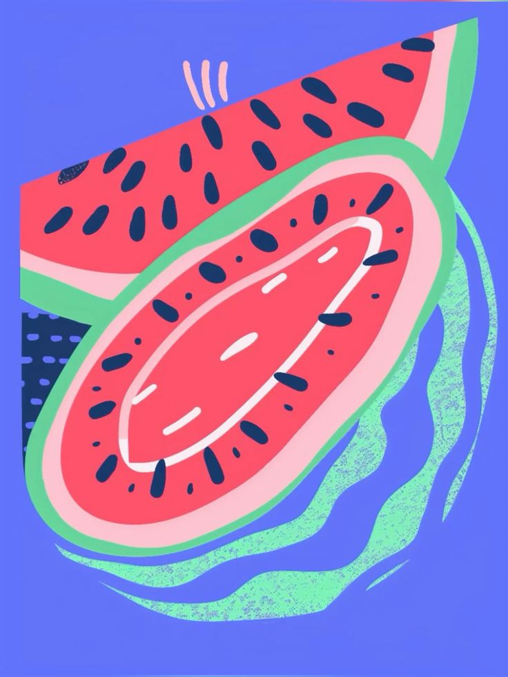

🍉w🍉e🍉l🍉c🍉o🍉m🍉e🍉 2 🍉w🍉a🍉t🍉e🍉r🍉m🍉e🍉l🍉o🍉n🍉 w🍉o🍉r🍉l🍉d🍉!

FACTS ABOUT WATERMELONS
Watermelons are 92% water
World's heaviest watermelon
National Watermelon Association
SECRET WATERMELON FACTS (do not click)
🍉🍉🍉 watermelon's are 92% water and are considered both fruit and vegetable 🍉🍉🍉